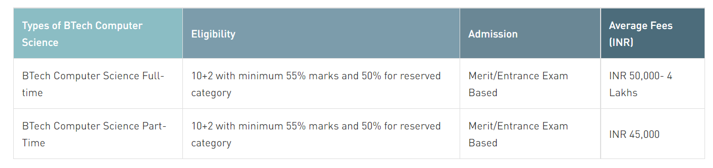
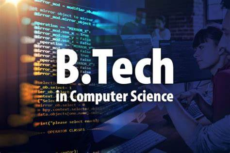

Computer Science
Quick Facts
# The Average annual fees of BTech Computer Science course range between INR 50,000-INR 2,00,000.
# The BTech Computer Science Admission process is usually based on merit.
But, some of the colleges conduct their own entrance exams.
# Top BTech Entrance Exams are JEE, IPU, WBJEE , BITSAT , and many more.
# Regular BTech Computer Science and Part-time BTech Computer Science are the most common
types of BTech courses pursued by students in India.
# BTech Computer Science Top Colleges offering BTech courses are IIT Delhi, IIT Madras, IIT Kharagpur, IIT BHU etc
# Common Jobs after BTech Computer Science: Computer Engineer, Network Administrator,
Application Consultant, System Administrator, Mobile Application Developer, etc
# The average annual starting salary offered to BTech Computer Science in India ranges
between INR 3 and 15 Lakh depending on the candidate's expertise in the field.
Why study Computer Science?
There are many advantages to studying a BTech Computer Science degree program. Some of them are:
Upon completion of this course, students are easily hired as Software Engineers, Testing Engineers, and Technical Support in a variety of IT firms.
If you are interested in learning everything there is to know about computer technology, this is the course for you. See: Software Engineering Courses
Students will learn skills such as software development, programming languages, website development, and so on.
Students can work in a variety of industries, including MNCs, software firms, and the banking sector.
Attractive salary packages are available for BTech Computer Science graduates, with an average annual salary of INR 3-20 Lakhs.
Students interested in a career in science and technology can enrol in Bachelor of Technology courses.
A Btech in Computer Science can lead to a high salary after specialisation in a variety of fields.
Those interested in programming and development should definitely pursue a Bachelor of Technology in Computer Science degree. See: Science Courses
Candidates who have a future plan should definitely take this course.
Individuals who are passionate and ethical and who are true to themselves can take this course and try their hand in a variety of domains.
Individuals who are working or have less time can pursue part-time and distance Btech in Computer Science courses.lesser financial resources.

Five Compelling Benefits of Studying Computer Science
Excellent Graduate Prospects:
The job market for computer engineers is constantly growing and Computer Science students have greater chances of being professionally employed.
Campus Placement is another good gateway for them to land in a good position with an industry giant.
Lakhs of new jobs are predicted in the coming years.
Earn Big Bucks:
Computer engineers are in demand these days with the evolution of data science, big data, artificial intelligence and machine learning.
All these 21st-century roles offer a high salary package with an average salary of INR 6,20,244 annually.
Jobs in Every Industry:
Jobs of Computer Science exist in all other fields be it education, health, finance, trading, science, engineering or transport.
Software are being designed for each field and computer scientists have a great responsibility to streamline the work in each one of them.
Global Career Opportunities:
Computers and computer scientists have gone global now. It needs no reflection that those who study Computer Science get a majority of career opportunities overseas.
This helps aspirants gain necessary skills and a greater platform to showcase their skills and step up on their career ladder.
Earning while studying:
Computer Science engineers have an advantage over other engineers as they can earn while they study.
They can set themselves in their local area in the IT Support, web development or any other domain.
Computer Science Offers a Range of Programs
Studying computer science from a renowned college comes with a range of opportunities for the students such as agile learning, campus placement, industry visits, guest lectures, and much more. Manav Rachna offers both UG and PG courses in computer science and engineering. Industry association is the main highlight of these programmes including regular interaction with the industry experts in the specialized labs. IBM and Xebia are the knowledge partners of Manav Rachna for Computer Science and Engineering programmes wherein students are given a range of benefits.
IBM provides a Learning Management System Train the Teacher Programme, Industry Projects for students, Expert Lectures, Industry connectivity to enable students to experience the live IT environment.
Xebia has set up ‘Agile Learning Lab’ at the campus to ensure smooth facilitation of lectures, and hands-on exercises of computer science students.
The lab would also provide a dynamic environment for students and faculty members to communicate and work together.
In addition to this, both Xebia and IBM provide internship support, workshops, placement, and courseware support.

What is Computer Science
Subjects in Computer Science
How to Study?
Computer Science Subjects:
1) Intro Computer Science
2) Computer Networks
3) Calculus
4) Data Structures and Algorithms
5) Database Systems (DBMS)
6) Discrete Structures
7) Java
8) Python
9) Object-Oriented Programming
10) Operating Systems
11) Mobile Development
12) Web Development
Top Recruiters
1) Deloitte
2) IBM
3) Cognizant
4) HCL
5) Google
6) Central Government Organisations
7) Microsoft
8) Hewlett and Packard
9) Apple
10) Infosys Technologies
11) Adobe
12) TATA Consultancy
13) Cisco